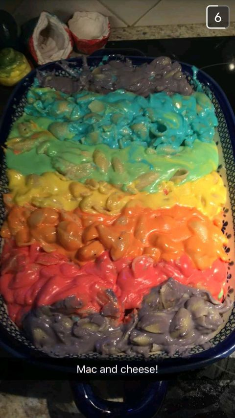

Pride-inspired Macaroni!

This seasonal treat is sure to make you scream in joy, disgust, and pride! One bite of this will have you seizing on the floor (heart attack? happiness? You decide!).
- A pan
- A unicorn horn
- Kraft mac and cheese
- Bake the macaroni
- Squeeze the unicorn horn over the baked mac 'n cheese, officially cementing your betrayal to god's hospitality
- Devour